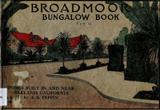

by J.B. Peppin
by J.B. Peppin
Enjoy this Slideshow Compendium on Flickr of over 90 pages of this 1919 publication covering most of the various home styles in the Broadmoor area. The scanning of these pages was generously facilitated by Meli Rieboldt.